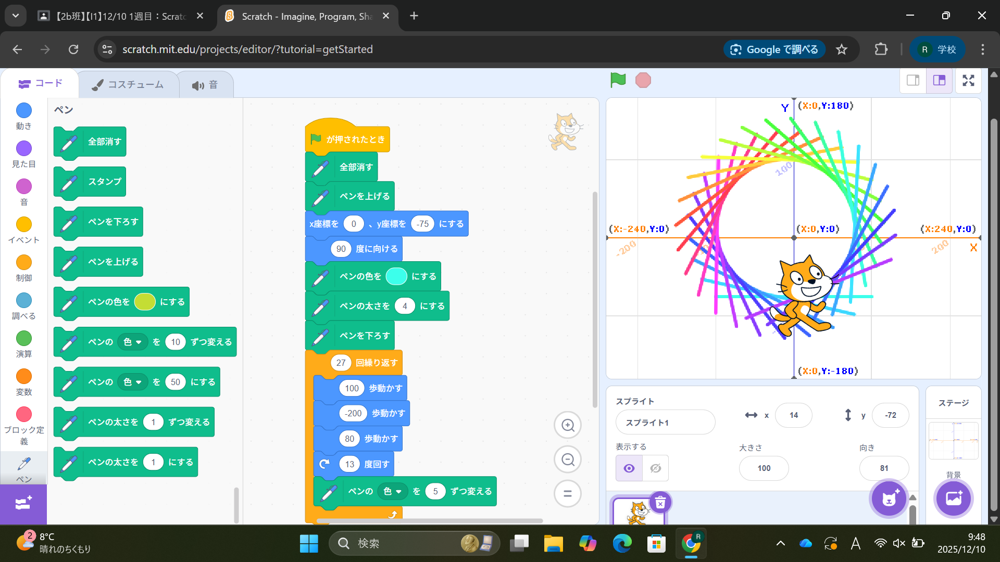
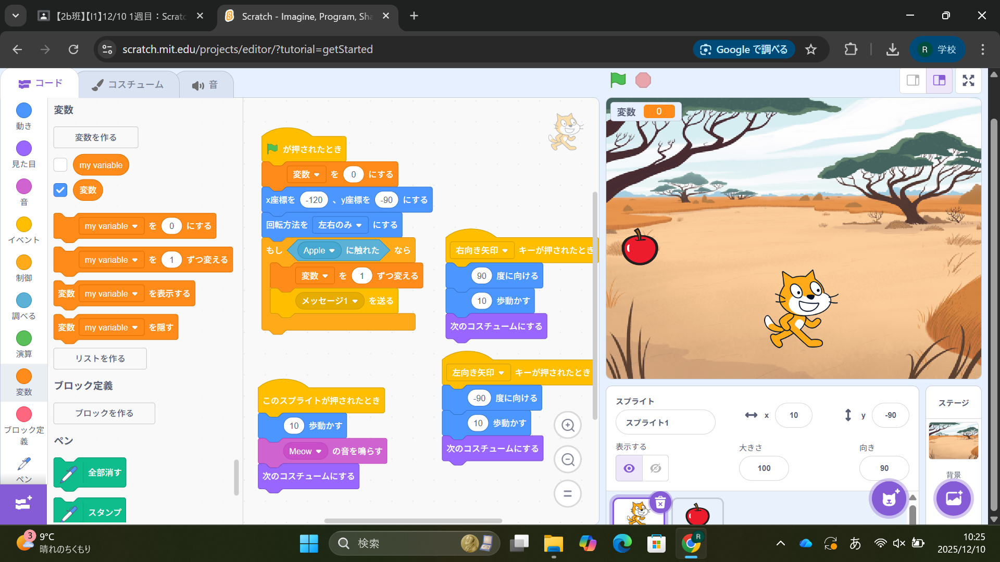

1週目のレポート ： 公大高専１年実習I-1
2b班38番 Ebifurai
第1週目
1-1 サイエンスアート

1.内容
プログラミングの作成にあたり、高専ならではの体験に触れることができた。
また、一つ一つについて詳しい説明があり、とても分かりやすかった。
2.感想
今回の実習を通して改めてプログラミングの面白さを体感し、サイエンスアートの美しさを知ることができ、
とても有意義な体験だった。
1-2 ゲーム

1.内容
シンプルなプレイ方法ながら面白いゲームの作成で、
サイエンスアートに比べるとコマンド数が多くプログラミングの幅が広がった。
2.感想
スクラッチでゲームを作ったことはあったが、変数などの使い方が分からなく、
使わずにプログラミングしていたのでとても勉強になった。
1-3 ホームページ作成
私のホームページ
1.内容
Githubを使った実習でホームページを作り、編集する体験を行い、
その応用としてレポート作成もGithub上で作成した。
2.感想
初めての体験で、今まで触れることのできなかったホームページ作成の裏側を知ることができ、
この体験を今後にも生かしていきたいと思った。
各ページへのリンク
1週目のレポート
2週目のレポート
3週目のレポート
私のホームページ